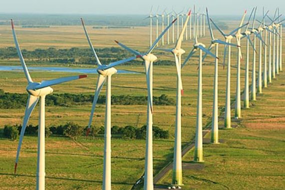

Energia Eólica
O que é geração de energia eólica?
Energia renovável que gera energia elétrica a partir da força dos ventos.
Como nas demais, é um processo que transforma a energia cinética do movimento do vento, em energia elétrica. É possível por meio de aerogeradores, ou turbinas eólica, que é feito com uma torre, pás e rotor (peça na qual as pás são conectadas).
A força do vento é quem movimenta as pás, acionando então o rotor, e o movimento do rotor é multiplicado no interior da nacele, que é uma estrutura que fica conectada na torre da turbina, ficando atrás das pás.
Então, no interior da nacele é onde fica o gerador, que é responsável pela conversão da energia cinética em energia elétrica.
Vantagens
- Gerada de uma fonte renovável;
- Fonte alternativa a fontes mais poluentes;
- Também pode ser gerada em escala residencial através de mini turbinas.
Desvantagens
- Produzem ruído elevado;
- Depende da força dos ventos, ou seja, de um fenômeno natural;
- Altos custos
- Representam um perigo a aves, como passaros e morcegos, possuindo risco de morte.

Fonte: FMASE
Fonte: FMASE